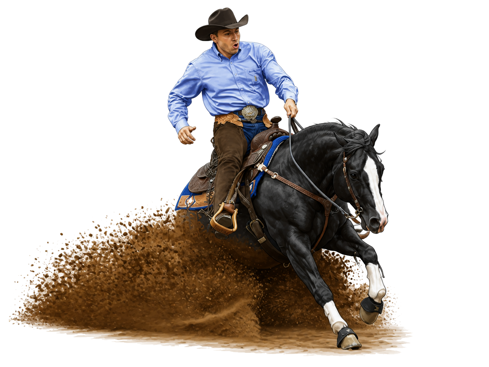
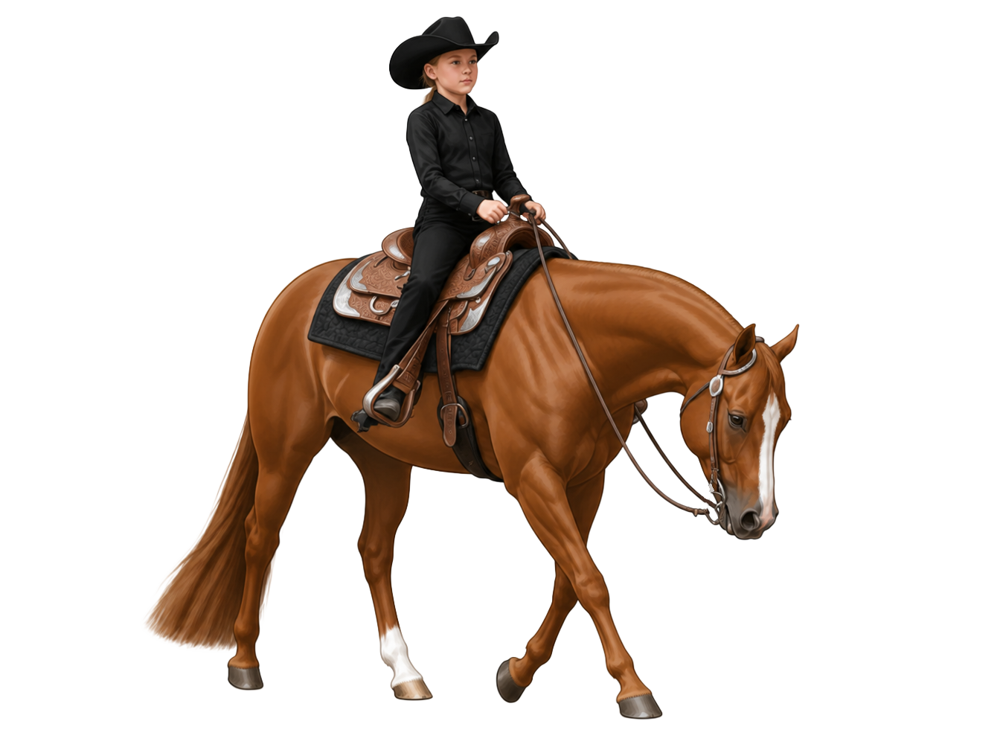
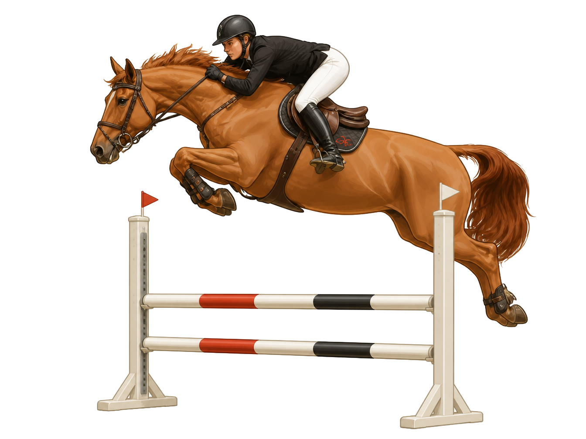
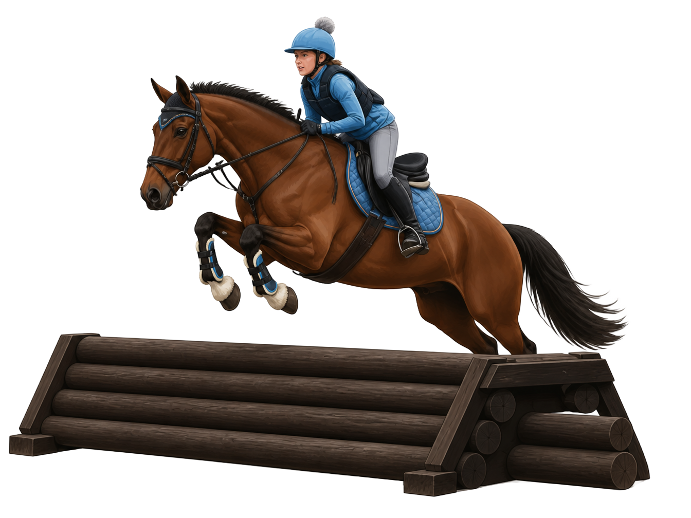
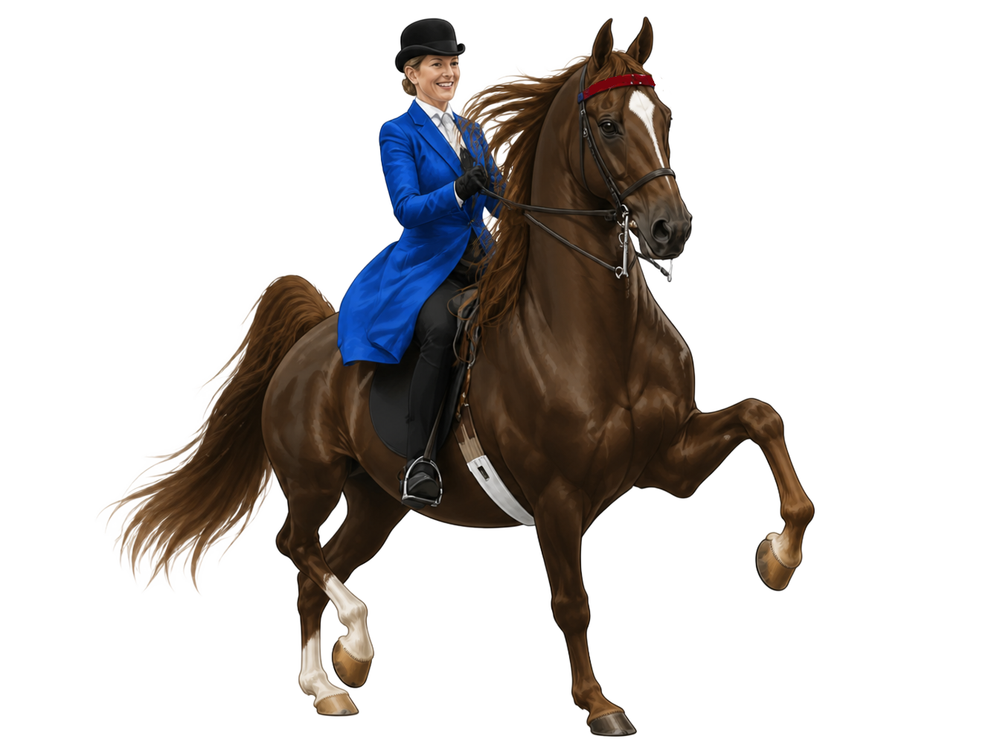

From Style to Discipline
Within the categories of Western and English are individual disciplines, each built around specific goals, movement patterns, tack, and competitive standards. These disciplines developed over time as different types of riding became more specialized. For example, reining is a Western discipline focused on precise cattle-handling movements, while dressage is an English discipline centered on structured, controlled movement and communication.
Western disciplines grew out of ranch and cattle work. They emphasize practical control, steady handling, and maneuvers with real working roots.
Trail Riding
Trail riding involves riding over natural trails or prepared courses designed to simulate real-world terrain and obstacles. It emphasizes steady control, responsive handling, and practical movement across varied environments.
 Trail Riding
Trail RidingRanch Riding
A discipline that emphasizes smooth, practical movement and a horse's ability to perform tasks that reflect everyday ranch work—skills that are still used today by some riders working horses on ranches—while maintaining responsiveness, balance, and control.
 Ranch Riding
Ranch RidingWestern Pleasure
A judged rail class focused on a relaxed, consistent horse that moves quietly and willingly at the walk, jog, and lope while maintaining steady rhythm and smooth transitions.
 Western Pleasure
Western PleasureReining
A pattern class that emphasizes controlled, precise maneuvers—including circles, spins, sliding stops, rollbacks, and smooth transitions—performed with speed, accuracy, and responsiveness.

ReiningBarrel Racing
A timed event where horse and rider complete a cloverleaf pattern around three barrels as quickly and cleanly as possible, balancing speed with control and precision through each turn.
 Barrel Racing
Barrel RacingPole Bending
A timed speed event where horse and rider weave through a straight line of poles, emphasizing quick turns, accuracy, and control.
 Pole Bending
Pole BendingCow Work
These events include cutting, roping, working cow horse, and team penning, and are rooted in traditional cattle work, where horse and rider work together to control, separate, or move livestock in working ranch environments.
 Cow Work
Cow WorkWestern Horsemanship
A judged class focused on rider position, control, and pattern accuracy, emphasizing smooth and precise communication between horse and rider in Western tack.

HorsemanshipEnglish disciplines center on balance, precision, and forward movement — from the structured tests of dressage to jumping and speed sports.
Dressage
A discipline focused on precise, balanced movement and communication between horse and rider through a structured test of required figures and movements performed in sequence.
 Dressage
DressageHunters
A judged jumping discipline that emphasizes smooth rhythm, steady pace, correct form over fences, and an overall polished and consistent round.
 Hunters
HuntersJumpers
A jumping discipline scored by speed and faults, where horse and rider are judged on how quickly and cleanly they can complete a course of fences.

JumpersEventing
A three-phase sport that combines dressage, cross-country, and stadium jumping, testing the horse and rider's versatility, fitness, and ability to perform across multiple riding disciplines.

EventingEquitation
A judged discipline focused on rider position, effectiveness of aids, and the ability to guide the horse smoothly and accurately while maintaining balance and control.
 Equitation
EquitationSaddle Seat
A riding style often associated with high-stepping breeds and show-ring performance, emphasizing animated movement, presence, and precise presentation in the arena.

Saddle SeatPolo
A fast-paced team sport where riders use mallets to move a ball toward goal, requiring speed, balance, quick turning, and coordinated teamwork.
 Polo
PoloHorse Racing
A speed-focused sport where horses gallop over a set distance, with riders using a forward seat and short stirrups to help the horse stay balanced, stable, and efficient at high speed.
 Horse Racing
Horse Racing